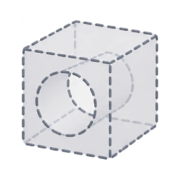
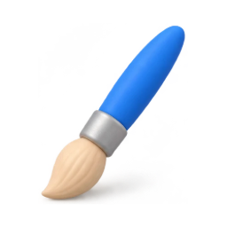
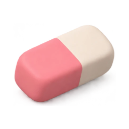
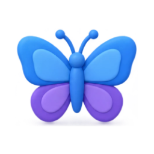
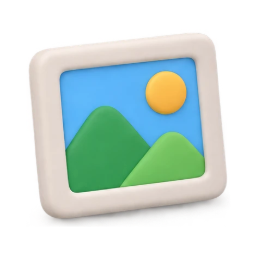

Choisis un point de départ. L’assistant à droite t’explique tout au fur et à mesure.

Indique la place dont tu as besoin à l’intérieur. L’assistant ajoute les parois, le fond et fabrique un couvercle qui s’emboîte.
Trace les contours avec un trait d’épaisseur fixe, puis remplis les zones : le noir sera en plastique, le blanc à l’intérieur devient des trous. Molette : zoomer · clic droit (ou Espace) + glisser : faire défiler la feuille.




Tu vas enregistrer ton projet. Range-le dans le dossier de ton équipe :
Dans la fenêtre qui va s’ouvrir, clique sur Bureau (à gauche), puis ouvre les dossiers un par un, dans cet ordre. La prochaine fois, la fenêtre s’ouvrira directement au bon endroit.
Ce navigateur ne permet pas de choisir le dossier : le fichier ira dans Téléchargements. Déplace-le ensuite dans le dossier de ton équipe (ou utilise Chrome ou Edge).
Choisis un projet : l’assistant te guide étape par étape et coche tout seul ce que tu as réussi.